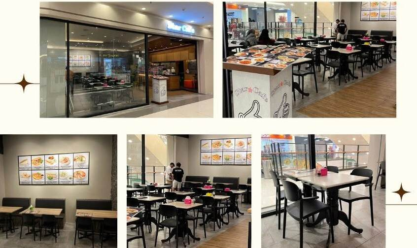
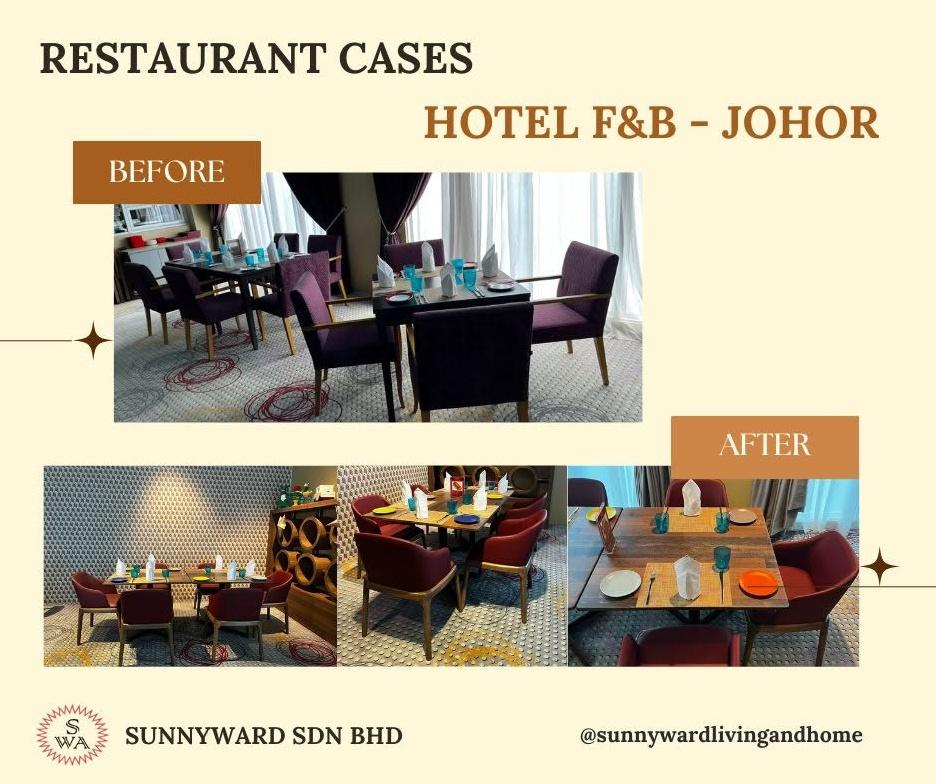

Taiwan foundation
Furniture and commercial project experience began in Taiwan, building knowledge in construction, materials and custom production.

Sunnyward supports designers, hospitality operators and commercial project teams with furniture sourcing, customisation and project coordination across Southeast Asia.
Our experience combines furniture-making knowledge originating from Taiwan with regional operations in Malaysia and Singapore.
Sunnyward’s furniture experience began in Taiwan in 1988. That foundation developed into a practical understanding of commercial furniture construction, materials, production and project delivery.
Malaysia became Sunnyward’s operating base in Southeast Asia in 2018, supporting commercial projects, regional sourcing and on-site coordination. The Singapore regional office later expanded business development and cross-border support.
Today, Sunnyward works with designers, architects, operators and project partners to turn furniture concepts into workable commercial solutions—from product selection and custom development to production follow-up, logistics, delivery and installation support.

Furniture and commercial project experience began in Taiwan, building knowledge in construction, materials and custom production.
A Southeast Asian operating base for project coordination, sourcing, delivery and local project requirements.
A regional platform supporting partnerships, export activities and Southeast Asian business development.
Commercial furniture support across F&B, hospitality, outdoor leisure, office, retail and other project environments.
Our role can begin with a product enquiry or a complete project brief. We coordinate resources around the design intent, budget, quantity, schedule and delivery location.
Suitable commercial furniture based on application, quantity, budget and delivery requirements.
Review dimensions, finishes, materials, upholstery and construction details for the project.
Compare appearance, durability, maintenance and indoor or outdoor requirements.
Review construction, quantities, packaging and logistics without losing the design intent.
Coordinate drawings, samples, material confirmation, follow-up and inspection requirements.
Support container planning, export, local delivery, installation and after-sales follow-up where applicable.
Our work is shaped around the teams responsible for designing, sourcing, building and operating commercial environments.
Furniture experience originating from Taiwan since 1988, forming a foundation in materials, construction and commercial furniture development.
Sunnyward’s Southeast Asian operating base for project coordination, sourcing, local delivery, installation support and after-sales communication.
A regional platform supporting business development, export, commercial partnerships and cross-border opportunities.
Recommendations consider traffic, maintenance, operations and commercial use.
Products can be adapted through dimensions, finishes, upholstery and material alternatives where feasible.
Product, production, delivery and site requirements are reviewed together.
Local coordination is combined with regional supplier and manufacturing resources.
Share your floor plan, furniture schedule, reference images, quantities, project location and required completion date. We will review the information and recommend the most practical next step.